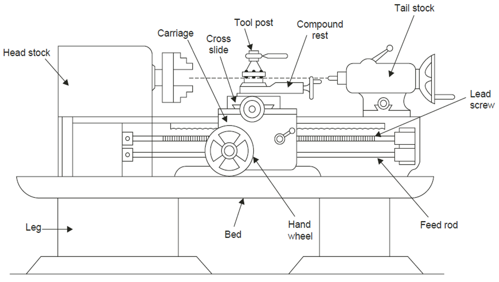
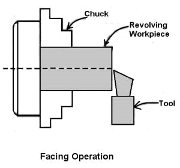
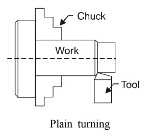
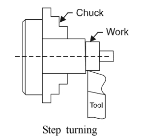
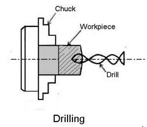
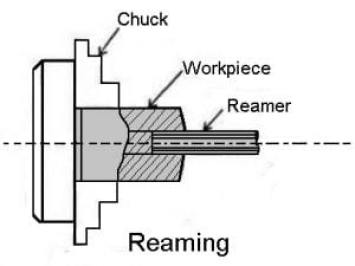
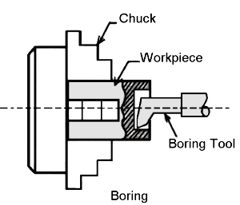
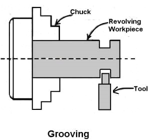
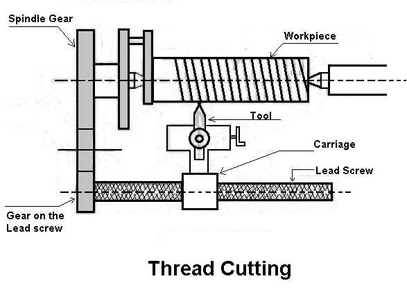
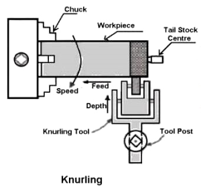

Q.7 Enlist various operations of lathe machine.
लेथ मशीन के विभिन्न ऑपरेशन को सूची बद्ध करें?
Ans. 7 - Lathe Machine Operations which can be carried out on a lathe are given as follows -
(i) Facing (ii) Plain turning (ii) Step turning (iv) Drilling (v) Reaming (vi) Boring (vii) Undercutting (viii) Threading (ix) Knurling.

(i) Facing - Facing operation is Work essential for all works. In this, the workpiece is - held in the chuck and the facing tool is fed from the centre of the work piece towards the outer surface or from the outer surface to the centre, Tool with the help of a cross-slide. This operation is shown in fig.

(ii) Plain Turning - In this, the work is held either in the chuck or between centers and the longitudinal feed is given to the tool either by hand or power. It is an operation of removing excess amount of material from the surface of the cylindrical workpiece. Plain turning is shown in fig.

(iii) Step Turning - It is an operation of producing various steps of different diameters in the workpiece. It is shown in fig.

(iv) Drilling - Drilling is the operation of producing a cylindrical hole in a workpiece by the rotating cutting edge of a cutter known as drill. In this, the workpiece is held in a chuck and the drill is held in the tailstock. The drill is fed manually, into the rotating workpiece, by rotating the tailstock hand wheel. Drilling is shown in fig.

(v) Reaming - It is an operation of finishing the previously drilled hole. In this, a reamer is held in the tailstock and it is fed into the hole. Reaming operation is shown in fig.

(vi) Boring - Boring is the operation of enlarging a hole produced by drilling, punching etc. It is really internal turning. A workpiece containing a drilled hole is rotated while the cutting tool moves in a straight line. It is shown in fig.

(vii) Undercutting or Grooving - It is the process of reducing the diameter of a workpiece over a very narrow surface. In this, a tool of appropriate shape is fed into the revolving work upto the desired depth at right angles to the centre line of the workpiece. It is shown in fig.

(viii) Threading - The process of Chuck cutting helical grooves on the external cylindrical surface of workpiece is called threading. In this, the work is held in a chuck or between centres and the threading tool is fed longitudinally to the revolving work. The longitudinal feed is equal to the pitch of the Threading thread to be cut. It is shown in fig.

(ix) Knurling - Knurling is the Fig. Threading process of embossing a diamond shaped pattern on the surface of a workpiece. The Chuck purpose of knurling is to provide an effective gripping surface on a workpiece to prevent it Work from slipping. In this operation, a knurled tool is moved longitudinally to a revolving workpiece surface. The projection on the knurled tool Knurling reproduces depressions on the work surface.
